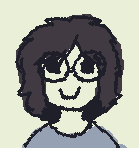

Ray Palomino
Hi, I'm Ray!
I'm a Japanese-American artist born in Japan and lived in 5 different states in the US. I am currently a student at San Jose State University studying Digital Media Arts. I work with many different mediums, including Illustration, 2D and 3D animation, 3D modeling, photography, and front-end programming.
artist statement
I am a 2D and 3D artist that focuses on storytelling to invoke an emotional reaction from my audience. My work incorporates character driven stories and compositions. The stories my work tells are partly to help me understand myself and the world around me. As well as a way to make the audience question their perception of the world and how they feel about my piece. I invoke such feelings through color theory, the placement of characters within a scene and lighting. These elements are all incorporated throughout my different mediums, illustration, 3D modelling and animation.
I start my work with a simple question about how I feel about a certain subject or how that subject is represented. I then make a piece from start to finish by myself about the given question. I enjoy making these pieces by myself, as it gives me full creative control and responsibility for the piece to see it through. My goal is to create work that is not only personally meaningful to me but also allows for introspection to be invited from the audience when viewing my work. My audience may be small as of right now, but I hope to grow and expand in the future as an artist.